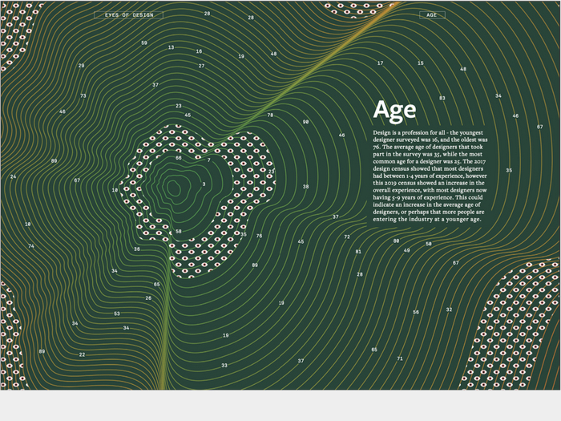

eyes on designers
Data Visualization for AIGA Census Data
Context:
Spring 2020
4 weeks
Group project
Team:
Mauro Magarelli
Zoe Attwood
Ikjong Choi
Skills:
Data Visualization
Javascript (p5.js)
Print Design
Visual Design
Overview:
The American Institute of Graphic Arts (AIGA) collects census data on designers in the States at the end of every year to better understand the current state of design. With this open source data, we wanted to find a way to better analyze the data through visualization to help viewers understand the significance of the data beyond numbers and text. Our group chose to focus on the theme of satisfaction of designers.

01. diving into the data
While looking at the huge raw dataset, we wanted to find a way to show correlation between the various information.
We narrowed down our focus to the theme of satisfaction of designers, and looked into categories of data sets that may have connections to this focus. We chose the 4 datasets of level of satisfaction, years of experience, amount of salary, and level of job stability.
02. ideation
The eye logo is AIGA’s main metaphor, so we decided to use it as the main visual for our system.
Some of the questions that helped to guide our design ideation are: 1. How can we visualize the data appropiately and creatively? 2. How can designers help to develop data beyond information delivery through visualization?
We divided the eye into 4 sections based on human eye’s biological structure, and had each section represent a different layer of data.
1. Sclera - Level of Stability
2. Iris - Amount of Salary
3. Pupil - Years of Experience
4. Eyelid - Level of Satisfaction
When each set of visual representation is combined together, it forms an eye. Each eye represents 1 designer, the image below illustrates what the least ideal and most ideal designer looks like. We designed the system so the the most ideal designer would have an eye just like the logo.
04. coding
To maximize our effort and time on designing and refining the system, we used computation as a tool to execute the designs.
We used javascript (p5.js) to randomly select 300 sets of data from the raw dataset from AIGA census (which contains data from 9424 designers), and had the codes run through the data set to generate and export the 300 images of eye. The image to the left below is a slowed-down video of the codes generating the images.
05. print design
300 designers through 3 different lens.
The final component of our project is a magazine, inspired by AIGA’s Eye on Design magazine. To help the viewers learn the data visualization better and to add a fun interactive activity to the book, the cover of the book is customizable. The reader can create their own eye based on the selections they make for each category. After they have completed all selections and inserted all the slides, their personal eye would be the cover of the book.

We wanted to see how different contexts could affect a designer’s satisfaction level, and so we decided to have 3 chapters each with different themes- age, USA region, and employment type. Each chapter contains designers’ stories and quotes relating to the theme of the chapter. We also added an extra layer of representation, the color of eyelids, to symbolize the designer’s age, usa region, and employment type.


In addition to the customizable book cover to help reader to learn the visualization, we also designed a ruler which readers can place side by side to the eyes within the chapters to learn about the data sets.